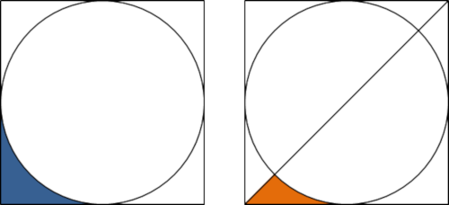

Problem 587: "Concave Triangle" (level 4)
A square is drawn around a circle as shown in the diagram below on the left.
We shall call the blue shaded region the L-section.
A line is drawn from the bottom left of the square to the top right as shown in the diagram on the right.
We shall call the orange shaded region a concave triangle.

It should be clear that the concave triangle occupies exactly half of the L-section.
Two circles are placed next to each other horizontally, a rectangle is drawn around both circles, and a line is drawn from the bottom left to the top right as shown in the diagram below.

This time the concave triangle occupies approximately 36.46% of the L-section.
If $n$ circles are placed next to each other horizontally, a rectangle is drawn around the n circles, and a line is drawn from the bottom left to the top right, then it can be shown that the least value of n for which the concave triangle occupies less than 10% of the L-section is $n = 15$.
What is the least value of $n$ for which the concave triangle occupies less than 0.1% of the L-section?